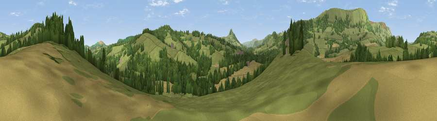

Viewpoint near Walterstone
#32346 in England · top 76% of its area beats it · near WalterstoneThe view, rendered

A 360° render of this exact spot computed from the terrain model, tree cover and land cover — summer colours, afternoon light, calibrated against photographs of famous viewpoints. Real trees, hedges and buildings will differ in detail.
The panorama
Grey silhouette: terrain skyline in each direction (720 bearings, Earth curvature and refraction included). Dashed green: skyline with trees (+15 m) and buildings (+8 m) as obstacles. Blue strip: how far the ground is visible on each bearing.
Where the view opens
Wedge length = distance to the farthest visible ground on that bearing (vegetation-aware). Rings at 10, 25 and 50 km.
What fills the view
66% grassland · 24% woodland · 10% cropland
Angular shares of the visible panorama (visual magnitude), not map area. Landscape diversity 0.38 (0–1 Shannon).
Key numbers
More beautiful places nearby
The staircase of upgrades: each row has a higher view potential than everything closer. Driving times are estimates from straight-line distance, calibrated against real road routing — check an actual route before setting out.
| Place | Direction | Drive | Score |
|---|---|---|---|
| Viewpoint near Walterstone | WSW · 0 km | ~1 min | 43.9 |
| Viewpoint near Clodock | WNW · 3 km | ~7 min | 79.6 |
| Garway Hill | E · 9 km | ~19 min | 84.6 |
| Millennium Hill | ENE · 45 km | ~65 min | 86.9 |
| Worcestershire Beacon | ENE · 48 km | ~68 min | 87.1 |
| Viewpoint near West Quantoxhead | SSW · 84 km | ~109 min | 87.9 |
| Viewpoint near West Quantoxhead | SSW · 85 km | ~109 min | 88.7 |
| Holdstone Hill | SW · 105 km | ~129 min | 90.2 |
51.90995, -2.95831 · source: screening · position refined by local search. Computed location — check access rights before visiting.